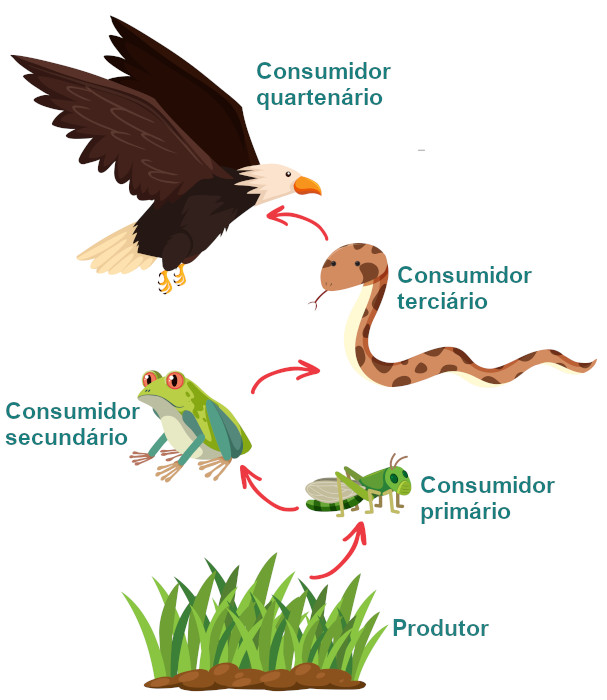
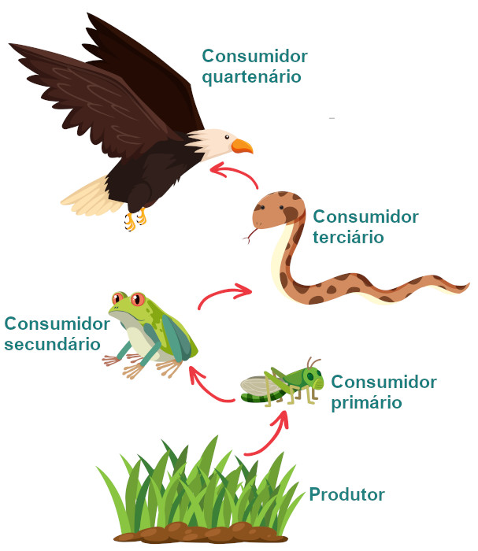

Conceitos Básicos
As cadeias alimentares mostram como a energia é transferida entre os organismos em um ecossistema.
Os níveis tróficos incluem produtores, consumidores primários, secundários, terciários e decompositores.
Galeria Interativa


As cadeias alimentares mostram como a energia é transferida entre os organismos em um ecossistema.
Os níveis tróficos incluem produtores, consumidores primários, secundários, terciários e decompositores.